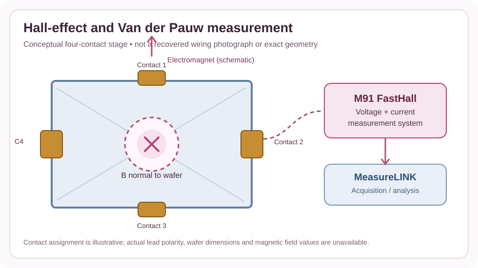
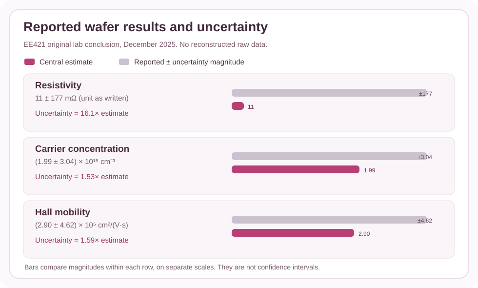

I used a semiconductor measurement setup to investigate the electrical transport properties of a wafer. The experiment combined the Hall effect with Van der Pauw measurements, connecting an applied magnetic field and measured voltage to resistivity, carrier type, concentration, and mobility. It also taught me how easily physical contacts and sample setup can influence what seems like a simple number.
Engineering challenge
Determine wafer resistivity and Hall transport characteristics while checking the validity of the contacts and measurement setup.
Methods and approach
Position the sample on a four-contact Van der Pauw stage, check contact behavior, and collect Hall and resistivity data with the M91 FastHall controller and MeasureLINK software.
Tools and environment
Hall effect, Van der Pauw method, M91 FastHall, electromagnet, MeasureLINK, semiconductor characterization.
Evidence and limitations
This page summarizes the work documented in the portfolio project book. Where underlying test data, design files, or screenshots are not public, the summary does not imply those materials were independently verified.
Recovered laboratory results
The original December 2025 EE421 report was recovered. Its summary records resistivity of 11 ± 177 mΩ (units as written), carrier concentration of (1.99 ± 3.04) × 10¹⁵ cm⁻³, and mobility of (2.90 ± 4.62) × 10⁵ cm²/(V·s). The controller produced 15 n-type and 15 p-type classifications. Because the reported uncertainties exceed all three nominal estimates, no reliable carrier type or material specification can be inferred. The resistivity unit is dimensionally ambiguous and requires the original instrument export for clarification.


Recovered engineering work
Using the original report as evidence, I documented the Hall coefficient, Van der Pauw sheet-resistance equation, resistivity, single-carrier density, and mobility calculations. A new Python analysis tool and numerical tests support follow-up work using future verified measurements. The original wafer dimensions, individual resistance measurements, Hall voltage series, instrument configuration and calibration records were not available.
This page is based on the existing portfolio project description. It distinguishes reported results from targets and does not publish restricted NASA files or unavailable raw data.